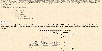
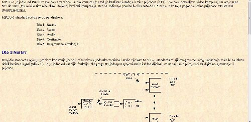
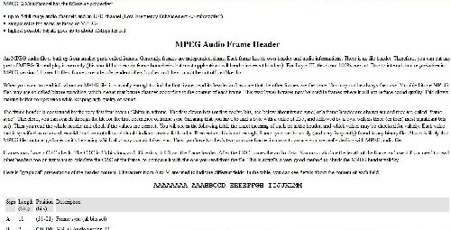

Pocetna
Literatura
Primjeri
Slične Stranice:



MPEG-1 Audio
Uvod
MPEG 1 audio kompresija
MPEG 1 audio slojevi
tri algoritma ("downward compatible")
Layer-1, 2 i 3
brzina 1.5 Mb/s za video + audio, od toga 0.3 Mb/s za audio
podržava 4 moda rada
mono
dual-mono (npr.dva jezika)
stereo
uzdrženi stereo (iskorištava korelaciju u stereo kanalima)
radi na 32 do 448 kbps po kanalu
uzorkovanje 32, 44.1, 48 kHz
stupanj kompresije od 2.7 do 24
rade s gubitkom, ali ne osjetilnim (perceptivnim)
koristi pojavu frekvencijskog i temporalnog maskiranja
s kompresijom 6:1 (za 16 bitni stereo s uzorkovanjem s 48 kHz to je 256 kb/s) eksperti ne razlikuju kodirani od originalnog audia
Metoda:
ulaz je podijeljen u 32 frekvencijska podpojasa;
na temelju psihoakustičkog modela definira se količina maskiranja u pojedinom pojasu;
ako je snaga pojasa ispod praga maskiranja ne kodiraju se uzorci;
ako je snaga pojasa iznad praga maskiranja
određuje se potreban broj bitova tako da
kvantizacijski šum pada ispod praga maskiranja;
Layer 1
pojednostavljena verzija MUSICAM-a
jednostavni koderi
192 - 256 Kbps po kanalu
definirane brzine 32-448 kbps
Layer 2
istovjetan MUSICAM standardu
96 do 128 Kbps po kanalu
definirane brzine 32-384 Kbps
stereo, pribli߮o kvaliteta CD-a
Layer 3
kombinacija MUSICAM-a i ASPEC-a (kompr. shema)
64 Kbps po kanalu
definirane brzine 32-320 Kbps
vrlo blizu CD kvaliteti
MP3 format je MPEG1 Layer 3 audio format
Nazad
1.Svojstva audio signala
2.Digitalizacija govora
3.Dinamički raspon ljudskog sluha
4.CD audio kodiranje
5.DVD audio kodiranje
6.Drugi audio standardi
7.Tehnike za kodiranje govora
9.MPEG-1 audio layers
Link na službenu web stranicu kolegija
Multimedijska tehnika
kolegiju možete pristupiti putem moodle-a
ovdje